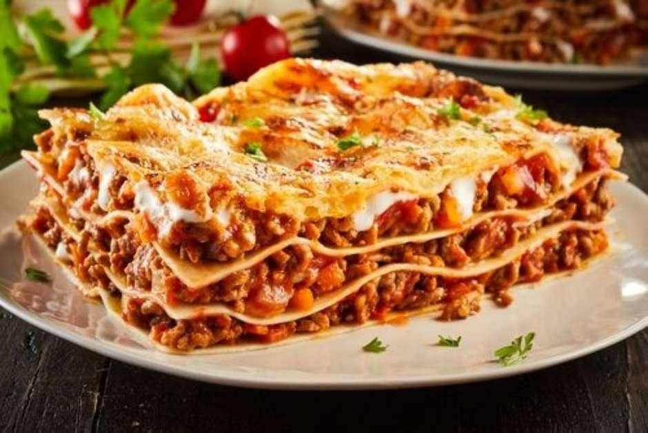

Cucina di Maria

Macarrão
descricao
R$50

Spaghetti
Tradicional massa italiana, longa e fina, servida com molho de tomate fresco, ervas aromáticas e azeite de oliva extra virgem, ou com seu molho preferido. Simples e saboroso, o spaghetti é um ícone da culinária italiana, trazendo à mesa a verdadeira essência da Itália em cada fio de massa.
R$50

Lasagna
Deliciosas camadas de massa fresca, recheadas com um suculento molho à bolonhesa feito com carne de qualidade, tomate e ervas finas. Coberta com queijo derretido e gratinada no forno, esta lasanha é o sabor da tradição italiana em cada garfada.
R$69
Rolar p/ baixo...
cardápio...